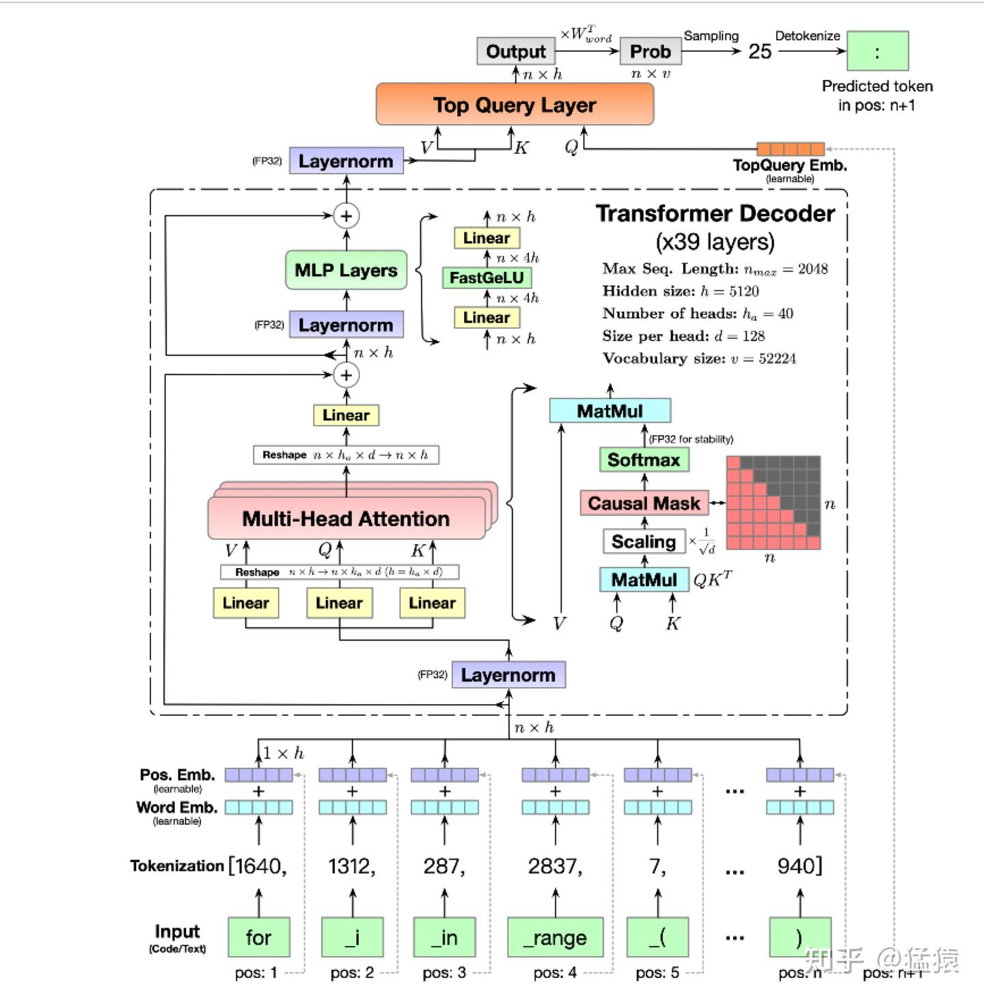
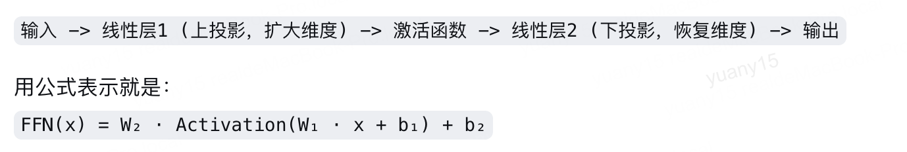
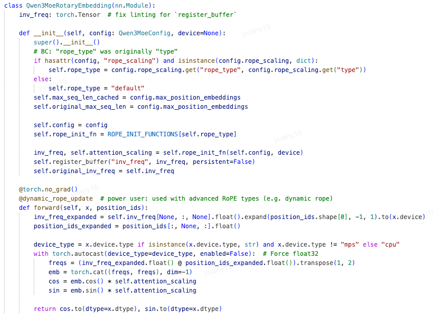
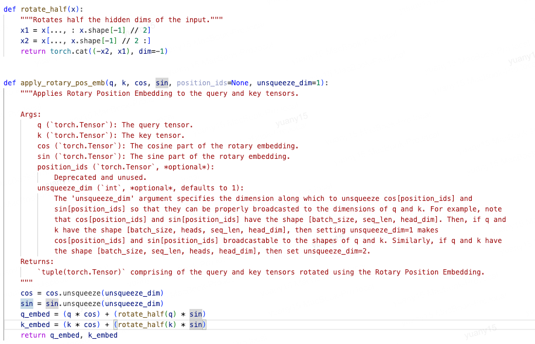

Transformer 结构与 RoPE
本文目录 10 个章节 · 展开查看
这篇笔记先说明 Transformer 中 Attention 与 MLP 各自做什么，再重点解释 RoPE：怎样给 query 和 key 加入位置，以及为什么旋转后会出现相对位置差。

配图是一个带 learned position embedding 和 Top Query Layer 的具体 decoder 示例。下面分别介绍通用残差子层、RoPE 和 SwiGLU；具体模型会选择不同组合。
1. Transformer block
对于进入一个 Transformer block 的 token 表示，我们记作 。以 pre-norm 结构为例：先对 做归一化，交给 Attention 聚合其他位置的信息，再加回输入得到中间表示 ；然后对 归一化，交给 MLP 变换特征，再加回 得到输出 ：
这里 是两个子层各自的归一化操作。Attention 负责跨 token 交互，MLP 通常逐 token 运算；两次加法都是残差连接，保留已有表示并叠加新的变换结果。
2. MLP 与门控变体
设每个 token 的输入宽度为 ，中间特征宽度为 。普通两层 MLP 先用 将输入映射到中间空间，再逐元素应用非线性函数 ，最后用 映射回残差分支要求的宽度； 是对应偏置：

写成 时，每个 token 用一行表示；也可以用列向量写成 ，两种记法需要相应转置权重，表示的是同一个线性变换。
两个线性投影之间的激活函数引入非线性。末端线性层将特征映射回残差维度；“为什么不再加一次激活”是架构选择，不是数学上只能有一个激活函数。
SwiGLU 常用三个无偏置投影：
3. RoPE：每对维度上的旋转
Attention 的点积需要同时反映内容和位置。RoPE 的做法是：对于位置 的 query 向量 ，按与 有关的角度旋转它；对于位置 的 key 向量 ，按与 有关的角度旋转它。之后再计算二者的点积。
为实现这个旋转，先把一个 attention head 中参与旋转的 个实数坐标两两配对，因此 必须为偶数，共有 对。我们用 表示第几对，并为它定义角频率 ，也就是位置每增加 1 时旋转多少弧度：
其中 是配置里的 rope_theta，不是角频率 。位置 上的二维向量按角度 旋转：
把一对实数写成复数 ，等价于：
这里 是满足 的虚数单位，下标 则是维度对编号。一个二维实向量可把第一坐标记为实部、第二坐标记为虚部；乘 的模长是 1，所以只改变方向、不改变该对坐标的长度。这就是选择复指数表示旋转的原因。
不同维度对使用不同频率：有些随位置变化转得快，有些转得慢，从而让不同维度携带不同尺度的位置变化信息。原始 RoPE 对 Q、K 做旋转，V 通常不做这一位置旋转。
4. 为什么点积包含相对位置
先看一对 query/key 坐标。把 query 的两个数记为 ，key 的两个数记为 ，并定义它们的复数表示 、；这一段的 仅表示四个坐标值。复共轭把虚部符号翻转，因此 。取乘积的实部得到：
实二维点积恰好等于一个复数乘另一个共轭复数后的实部。旋转后的点积逐步变为：
第二步使用乘积的共轭，以及单位复指数取共轭后角度变负；第三步合并同底指数。
全向量内积是所有维度对的上述结果之和。在位置 与 分别旋转后，一正一负的两个角度合成了 ，因此点积自然携带二者的相对位置信息。这是实向量与复数表示之间的精确等价。
显式旋转因子只含位置差 ，但分数还依赖 Q、K 的内容表示；不能把整项注意力说成“只依赖相对距离”。
5. 与 rotate_half 代码对照
实际代码通常直接操作实数张量。这里采用 split-half 布局：把向量前半记为 、后半记为 ；前半第 个数与后半第 个数配成一对。为了实现旋转，我们再定义辅助操作 rotate_half：交换这两半，并给原后半加负号：
例如 时，配对是 、，而 rotate_half(q) 得到 。Python 切片右端不包含在内，因此后半从 d//2 开始，正好覆盖剩余元素。
5.1 展开一对坐标的复数乘法
先只看其中一对坐标，把实部、虚部分别暂记为标量 ，旋转角度记为 。欧拉公式将复指数写成 cos 与 sin 的组合；再按普通乘法分配律展开四项：
这里用到了 ，因此旋转后的实部是 ，虚部是 。
5.2 将实部与虚部重新堆成向量
令 表示所有维度对的前半、后半向量，、 表示逐对角度的三角函数。先分别写两个半区，再拆成两项：
这就是代码中 cos/sin 复制成两半，以及 rotate_half(q)=[-y;x] 的由来，不是直接省略复数符号后随意拼接。
5.3 将旋转写成实数张量运算
第一步，根据每个 token 的位置 和每对坐标的频率 ，计算角度以及 cos/sin。由于一对坐标的实部、虚部共用同一个角度，要将得到的 个 cos/sin 值分别复制成前后两半，匹配长度为 的向量。
第二步，构造 rotate_half(q)，再做逐元素乘加。符号 表示相同位置的元素相乘， 表示拼接，二者都不是矩阵乘法：
# split-half 版本；cos、sin 已复制为 [freqs, freqs] 并广播到 head 维。
x1, x2 = q[..., :q.shape[-1] // 2], q[..., q.shape[-1] // 2:]
rotated_half = torch.cat((-x2, x1), dim=-1)
q_rot = q * cos + rotated_half * sin
还有相邻维度交错配对的实现。两种布局可通过相应置换表达相同旋转思想，但加载权重和应用算子时必须保持一致，不能把“前后各一半”当成 RoPE 的唯一规则。
配图与实现示例
基础旋转不额外缩放幅值；实现中的 rope_type、attention_scaling 等配置需要按具体模型选择。


6. 扩展上下文长度的边界
增大基数 会降低 维度对的角频率； 的频率仍为 1。改变频率结构不等于自动获得可靠的长上下文能力，还需匹配训练长度、继续训练/适配和评测。
最简单的位置插值可写成：
它是在位置或频率上做缩放，不等于任意修改 的指数。NTK-aware scaling、YaRN 等使用不同规则，应标注具体方法，不能合并成一个通用“加 α”公式。
7. 来源
- RoFormer 原论文：旋转位置编码与相对位置结构。
- Transformers RoPE utilities：不同缩放方案与配置。